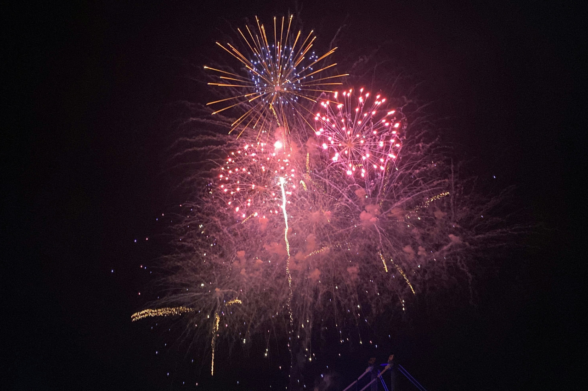
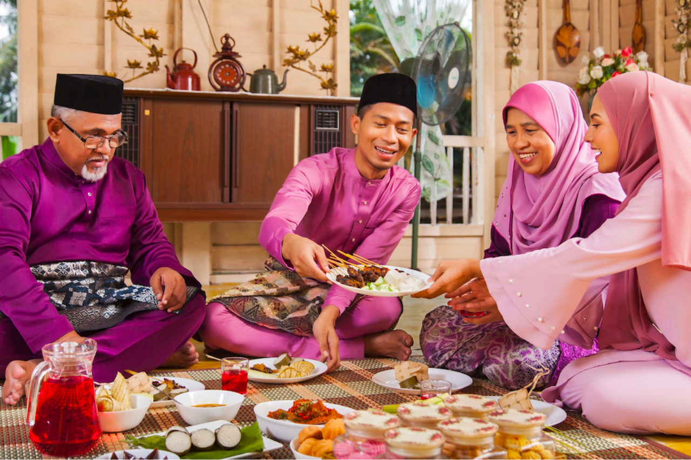
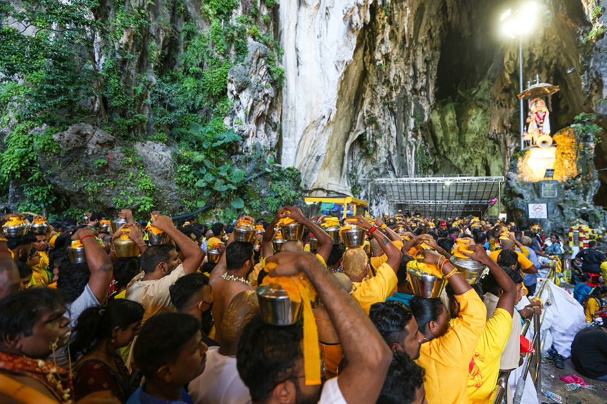
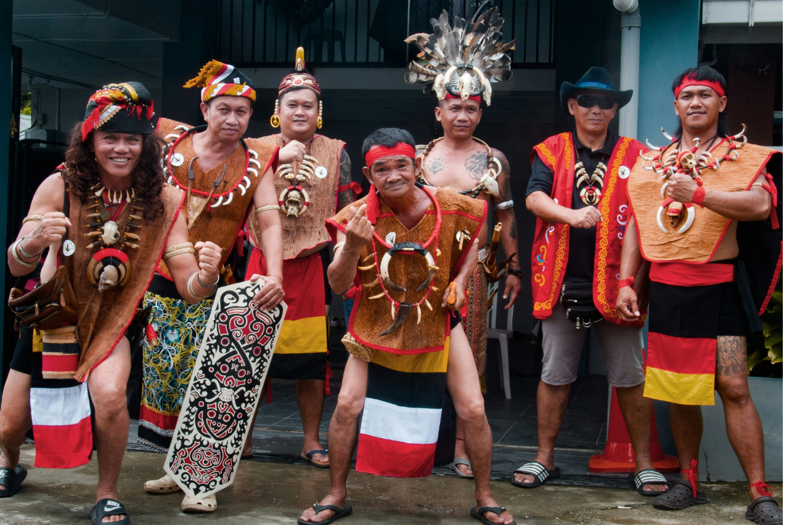
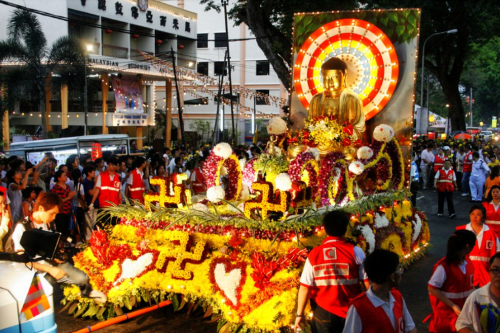

Chinese New Year
Chinese New Year is a major festival celebrated by the Malaysian Chinese community. It marks the beginning of the lunar new year and lasts for 15 days.
Streets and homes are decorated with red lanterns, symbolising luck and prosperity. Families gather for reunion dinners, exchange 'ang pows' (red envelopes with money), and enjoy traditional lion dances and fireworks.

Deepavali (Diwali)
Known as the "Festival of Lights," Deepavali is celebrated by Hindus to mark the triumph of light over darkness and good over evil.
Homes are beautifully decorated with oil lamps (diyas) and colorful rangoli patterns at the entrances. Devotees visit temples for prayers, and families share festive Indian sweets and meals together.

Hari Raya Aidilfitri
Hari Raya Aidilfitri marks the end of Ramadan, the Islamic holy month of fasting. It is the most significant festival for Muslims in Malaysia.
The celebration begins with morning prayers at the mosque, followed by asking for forgiveness from elders. Families host open houses, serving traditional delicacies such as ketupat, rendang, and lemang to guests of all races.

Thaipusam
Thaipusam is a spectacular Hindu festival dedicated to Lord Murugan. It is celebrated by the Tamil community with deep devotion and gratitude.
The most famous celebration occurs at Batu Caves, where thousands of devotees climb the 272 steps carrying 'Kavadis' (elaborate structures) or milk pots as offerings, sometimes with body piercings as acts of penance.

Gawai Dayak
Gawai Dayak is an annual harvest festival celebrated mainly by the indigenous Dayak people in Sarawak, Borneo.
It is a time to give thanks for a bountiful harvest and pray for a prosperous year ahead. Celebrations involve traditional dancing, wearing ethnic costumes, and drinking tuak (local rice wine) in longhouses.

Wesak Day
Wesak Day is the most important festival for Buddhists, commemorating the birth, enlightenment, and passing of Gautama Buddha.
Devotees gather at temples to pray, light lotus-shaped candles, give offerings, and participate in acts of charity. Night processions with beautifully decorated floats are a common sight in major cities.